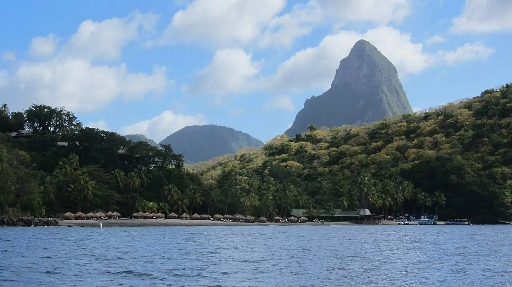

Anse Chastanet
Soufrière, Sainte-Lucie · snorkeling, plongée, baignade

Baie de sable sombre au pied des collines, près de Soufrière, dans la zone marine protégée de la côte ouest de Sainte-Lucie. Le récif commence juste devant la plage puis descend en tombant.
- Lieu
- Soufrière, Sainte-Lucie
- Niveau
- Débutant
- Activités
- snorkeling, plongée, baignade
- Type d'eau
- Mer / océan
- Coordonnées
- 13.87, -61.08 (position approximative du secteur)
Dangers à connaître
- Le récif descend vite : garde un œil sur ta profondeur.
- Passage de bateaux dans la baie : reste près du bord.
Le conseil d'Ocean Buddy
Snorkelle le matin, quand la mer est la plus calme et avant l’arrivée des bateaux d’excursion.
Ouvrir dans Ocean Buddy Télécharger sur l'App Store
Source : Fiche Ocean Buddy · septembre 2026 · à vérifier localement.